[N-World Contents] [Book Contents] [Prev] [Next] [Index]
Pulling Mattes
Mattes provide you with the ability to precisely control how color is applied to your images. In this chapter, you'll learn how to pull, save, and load mattes.
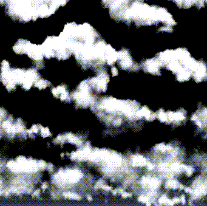
In this Chapter
This chapter will teach you:
Matte Basics
The fourth channel in a four channel image has a special function. Commonly referred to as the "alpha" or "matte" channel, the matte channel can be used much like a paper matte used by an airbrush artist.
Unlike a traditional matte, however, a digital matte can allow a percentage of ink through to the image. The matte serves as a multiplier for inks applied to the RGB channels. In other words, if you apply an ink to the canvas through a matte which is 50% opaque, the strength of the ink is multiplied by .5, which means it will be applied to the canvas at half-strength. A matte with an opacity of 100% prevents any ink from being applied to the image.
Additionally, the opacity of the matte can vary from one part of the image to another (so, for example, you could protect one side more than another).
For example, in Figure 3.1, the circle was drawn with white ink across three zones of matte opacity. The top third of the image has no matte (or a matte with 0% opacity). The middle third has a matte which is 50% opaque, and as a result the RGB values of the white ink are halved. The bottom third has a 100% opaque matte, so no ink was applied to this area.
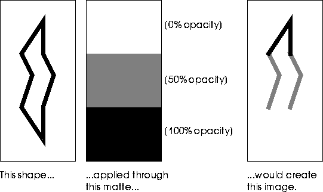
Figure 3.1 Matte opacity demonstrated
Painting onto the Matte Channel
You can use N-Paint tools to define mattes by painting directly onto the matte channel. When you paint on the matte channel, the opacity of the matte that is generated is a function of the Red component of the color of the ink you are using. So, for example, painting on the matte with white (RGB 1.0 1.0 1.0) results in a matte which is 100% opaque. Painting with black (RGB 0.0 0.0 0.0) results an 0% opacity. Using a grey like RGB 0.5 0.5 0.5 results in a matte of 50% opacity.
In addition to defining mattes by painting on them, N-Paint includes several powerful tools for using image attributes to create complex mattes. You can define mattes based on a range of RGB colors, or on the relative intensity, hue, and saturation of colors in an image. The RGB and IHS color models are each optimized for different conditions; which one you use depends on the nature of the image you're working with, and the effect you're trying to achieve.
Mattes can also be defined based on areas of high contrast in an image (also called an "edge matte" or "edge detect" matte).
To save the matte channel of an image you must save that image to a 4 component image file format, such as RGBA, TPX , or 4 component TIFF. (File formats such as RGB store only three channels of information.) To save mattes for use with RGB images, you must save the matte to a separate file and load both when editing the image in N-Paint.
Pull a Matte Using a Chroma Key
The concept behind an RGB matte is relatively simple: you define a range of colors which are completely protected from being painted on, and optionally an additional range of colors which are protected to a lesser degree. The fact that portions of a digital matte can be more or less opaque than others is the key to understanding and using them effectively.
The range that is absolutely protected is the hard range. The hard range is defined relative to a starting color, called the seed-color. The soft range defines an additional area of the color spectrum over which the opacity of the matte drops from 100% to 0%.
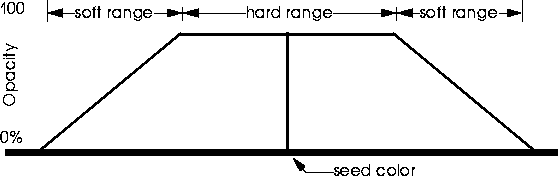
Figure 3.2 Creating mattes using the Chroma Key model
Mattes with no soft range have extremely sharp edges. Including a soft range provides for a certain blending of the matte effect around the edges of color areas in an image.
To pull a matte using a chroma key:
1. Load the following image:
/usr/local/ngc/demo/images/BLUE-SKY.tpx
2. (CLICK-L) on the Quad Tool in the Tool Box.
3. (CLICK-L) on the Ink field.
- The Select Ink menu appears:
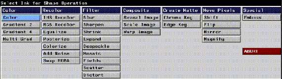
Figure 3.3 The Select Ink menu
4. (CLICK-L) on Chroma Key.
- The parameters menu for the Chroma Key ink appears:
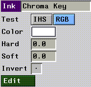
Figure 3.4 The Chroma Key ink parameters menu
5. (CLICK-L) on the RGB button in the Ink parameters section.
6. (CLICK-L) on Color.
- A color picker appears.
7. Move the color picker to the center of a cloudy area, and (CLICK-L).
- The color in the color picker will serve as the seed color for our matte.
8. (CLICK-L) on Edit.
- The Edit Chroma Key pop-up menu appears:
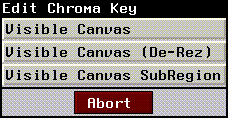
Figure 3.5 The Edit Chroma Key pop-up menu
9. (CLICK-L) on Visible Canvas.
Figure 3.6 The Chroma Key menu
The seed color defines the starting point for the matte. Only those pixels in your image which exactly match your seed color will be covered by the matte (and colored red) on the paint canvas.
Depending on the seed color you selected, the area covered by the matte at this point may be quite small. You can expand the hard area covered by the matte interactively with the color picker, or both the hard and soft areas with the sliders in the edit Chroma Key mode.
10. (CLICK-L) near the edge of a cloud with the color picker.
- The matte, colored red, expands to cover all pixels with colors between your seed color and the new color you just picked. A significant portion of the white, cloudy areas should now be covered by the matte.
- If your selection results in a matte that is too large, you can undo your last selection with a (CLICK-L) on Undo.
11. (DRAG-L) the Extra slider to change the Hard range more precisely.
- Moving the slider to the right increases the hard range of your matte. You can see the area of red covered by the matte increase in size on the canvas.
12. (DRAG-L) the Soft slider to adjust the soft range of your matte.
- Moving the slider to the right increases the soft-range. Experiment with these parameters by adjusting them to several different values.
13. (CLICK-L) on Exit when the matte looks right.
- Remember that you are just defining the parameters for the matte in Edit mode. You must still execute a shape operation in order to actually create the matte.
- Note. To create the matte, you must ensure that the matte is in Add mode. Entering the Chroma Key edit mode automatically toggles the matte to Add and View modes. However, if these modes are not toggled, you may have to toggle them. (CLICK-L) on the appropriate buttons in the Matte Modes section of the menu.
14. (CLICK-L) on Do Full Canvas in the Quad Tool parameters section.
- That's all there is to it! If your matte does not appear, make sure that Add and View are toggled on in the Matte Modes section of the menu, then (CLICK-L) on Repeat.
Touching up the Matte
You may find when you pull a matte that it contains small blemishes. Fortunately, you can paint on the matte just as you can with normal paint tools. To touch up the matte:
1. Make sure the matte is in Add and View mode.
- If necessary, (CLICK-L) on the Add and View buttons in the matte modes section of the menu.
2. Select the round brush and the color ink.
- Select white as your color, and paint over any blemishes you see on the matte.
- Remember that the Red value of the color you're painting on the matte with determines the opacity of the matte. So, black (RGB 0.0 0.0 0.0) creates a completely transparent matte, while white (RGB 1.0 1.0 1.0) creates a completely opaque matte.
- Other colors create matte of varying opacity. For example, a grey with RGB values 0.7 0.8 0.6 creates matte which is 70% opaque.
Using the Pan/Zoom Tool
Often you'll need to zoom in on your image while you're touching up the matte. You can use the Pan Zoom tool to change your view of the image.
To zoom in on part of the image:
1. (CLICK-L) on the Pan/Zoom tool in the Tool Box.
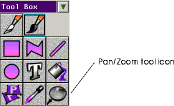
Figure 3.7 The Pan/Zoom Tool Icon
- The Pan/Zoom tool parameters menu appears:
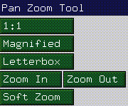
Figure 3.8 Pan/Zoom tool parameters
2. (CLICK-L) on Magnified to zoom in on a specific area.
- N-Paint prompts you to draw a rectangle on the screen. After you draw the rectangle, N-Paint expands the area within that rectangle to cover the entire canvas.
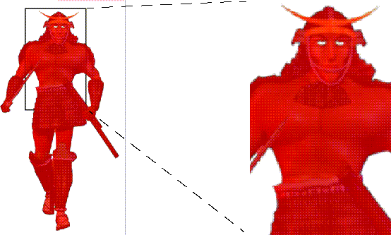
Figure 3.9 Using the Magnify command
3. To return to normal scale, (CLICK-L) on 1:1
- You can also hit the "x" hot key.
Other Zoom Modes
Panning
To pan around the image, select the Pan/Zoom tool, then (CLICK-L) on a point and drag the mouse. The image will move with the mouse.
Saving the Matte
You can asve mattes indepandantly of the images from which they are derived.
To save the matte channel to a file separately from the image:
1. (CLICK-L) on File>Save Matte.
- The Save Matte dialog appears:
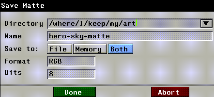
Figure 3.10 The Save Matte dialog
- Use this dialog to specify a path and filename for your matte image. You can save the image to File, Memory, or Both. Saving a matte to memory is useful if you are creating a matte for temporary use, but which you do not need to save.
2. (CLICK-L) on Both.
3. If you wish, (CLICK-L) on the directory field to specify a new directory in which to save your matte image file.
4. (CLICK-L) on the Name field. Enter a name for your matte image file.
- When saving mattes separately, it makes sense to name them in a way that associates them with the image they were derived from. In this case, something like BLUE-SKY-MATTE might be a good filename.
5. (CLICK-L) on Done to save the matte to a file.
Pulling and Using Intensity Mattes
Where a Chroma Key ink pulls a matte based on RGB color values, an intensity matte pulls a matte based on Intensity, Hue, or Saturation values. You can pull an IHS matte based on any one of these parameters, all of them, or any combination of them.
A primary use of IHS mattes is finding areas of images with intensities too high for display on various video devices. You can pull a matte to find these areas of intensity, then use an IHS recolor ink to scale down the intensity values of the offending areas.
Pulling an Intensity Matte
1. Reload the following image:
/usr/local/ngc/demo/images/BLUE-SKY.tpx
- If this image is already loaded, you can (CLICK-L) on File:>Revert instead. This will reload the image from disk.
2. (CLICK-L) on Add and View in the Matte modes section of the menu.
3. Select the Quad Tool and the Chroma Key ink.
4. (CLICK-L) on the IHS button In the Chroma Key parameters section of the menu.
5. (CLICK-L) on the color field, then use the color picker to pick a color from a bright area of one of the clouds.
6. (CLICK-L) on Edit.
- The IHS Chroma Key edit menu appears:
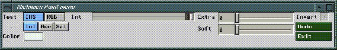
Figure 3.11 The IHS chroma key edit menu
7. Use the clicker to select a color from an area near, but not yet covered by the existing matte.
- This process is exactly the same as the one we used to edit the RGB matte previously on page 3-5.
8. When you're happy with the matte, (CLICK-L) on Exit.
- Remember, this step only sets up the parameters for the matte. You'll actually create the matte with a shape operation in the next step.
9. (CLICK-L) on Do Full Canvas.
Using the Intensity Matte
We'll use the intensity matte to reduce the intensity of the clouds a little. First, though, we'll need to reverse the matte.
10. (CLICK-L) on the Rev button in the matte modes section.
- Now we'll be able to recolor the clouds.
11. Select the Quad tool and the IHS Recolor ink.
- The IHS Recolor parameters menu appears:
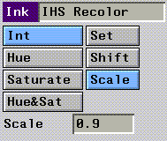
Figure 3.12 IHS Recolor parameters
12. (CLICK-L) on the Int and Scale buttons.
- By selecting Int, we work only on the intensity component of the image, without modifying its hue or saturation.
13. Enter a value of 0.9 in the Scale field.
- This value is the scaling factor by which the intensity values will be reduced or increased. A value over 1 results in more intense colors, while a value less than one results in less intense colors.
14. (CLICK-L) on Use in the matte modes section.
15. (CLICK-L) on Do Full Canvas.
- The intensity values for any unprotected pixels are multiplied by .9, essentially making these areas of the image less bright. You can repeat the application of the IHS Recolor ink to reduce the intensity again, or use the Set or Scale options to alter the intensity component.
Manipulating the Matte
You can add to the matte, or manipulate it just like any other element in an N-Paint image. You can also change the way in which the matte is displayed, to make it more or less conspicuous on the canvas. We'll run through a few simple examples to familiarize you with the matte controls.
1. Load the following image:
/usr/local/ngc/demo/images/hero-scaled.rgba
2. (CLICK-L) on View in the matte modes section of the menu.
- The matte appears in its default mode, which is a shade of red set to 70% transparency.
3. (CLICK-L) on the Display button in the matte modes section of the menu.
- The Matte display modes pop-up menu appears:
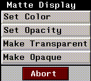
Figure 3.13 Matte display modes
4. (CLICK-L) on Make Opaque.
- The image is now displayed as a greyscale image. Areas not covered by the matte are black. The matte is shown in shades of grey which are relative to the opacity of the matte. In the example below, the matte is 100% opaque, so it appears white. This mode is useful if you want to get a good overall feel for the shape of the matte without the distraction of the underlying image.
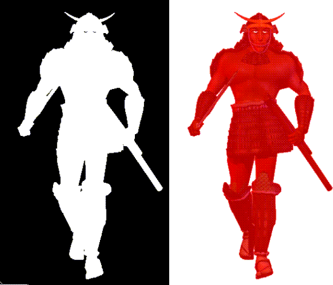
Figure 3.14 Left, Opaque matte display; Right, normal , ransparent matte display
5. (CLICK-L) on Make Transparent to restore the normal matte display mode.
You can also change the color for the matte display. You may want to change the matte color if you're working on an image that is primarily red. In this case, a blue or green matte might be easier to see.
6. (CLICK-L) on Set Color.
- The Matte Display Color pop-up menu appears.
You can also set the display transparency of the matte.
1. (CLICK-L) on Set Transparency, and adjust the slider to change the transparency of the matte.
- Remember that this affects only the display opacity of the matte, not its opacity to inks.
Opening a Matte
Once you've save a matte, you can load it again at any point in the future. To load a matte:
1. Open the Nichimen Browser.
2. (CLICK-L) on Files.
- A list of files in the current directory appears, like the one in Figure 3.15.
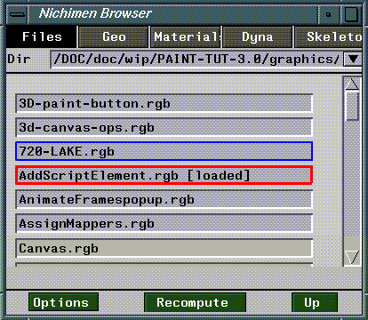
Figure 3.15 Browser for files
3. (CLICK-R) on your matte file.
- The Browser operations menu appears:
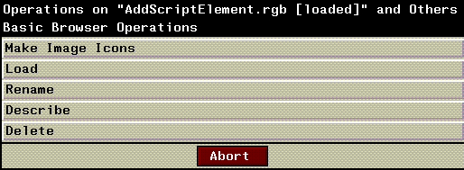
Figure 3.16 Browser operations for image files
4. (CLICK-L) on Load.
5. (CLICK-R) on the File: field in the paint menu.
- A list of images loaded into memory appears. You can load a matte from any of these images.
6. (CLICK-L) on the image you opened in the Browser in step 4.
- Your matte is loaded into the matte channel of the current image.
Congratulations!
You've learned how to pull mattes using RGB and IHS chroma keys. You've also learned how to touch up, save, load, and change the appearance of mattes in your images. With these simple techniques, you can create a large variety of different types of mattes for use with your images.
[N-World Contents] [Book Contents] [Prev] [Next] [Index]
 Another fine product from Nichimen documentation!
Another fine product from Nichimen documentation!
Copyright © 1996, Nichimen Graphics Corporation. All rights
reserved.